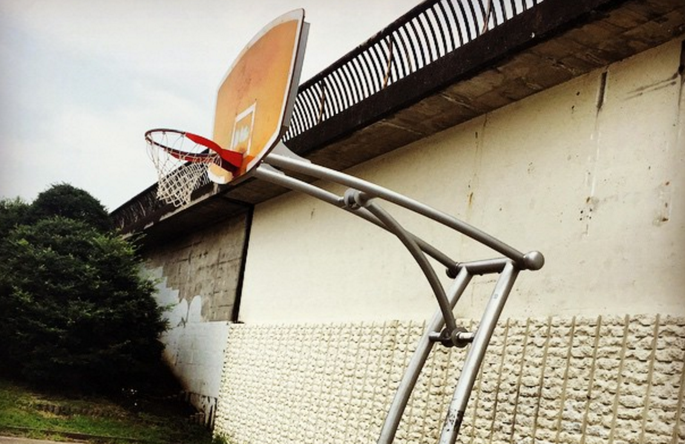
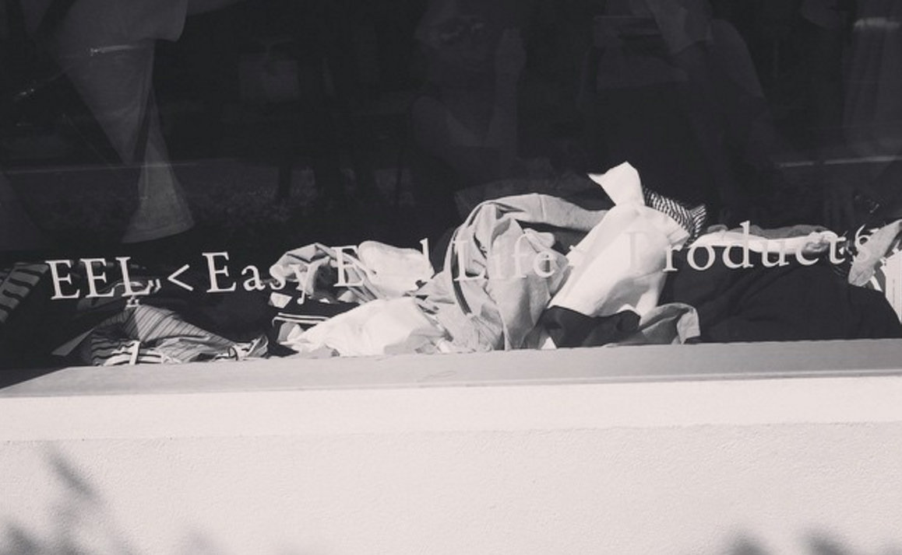
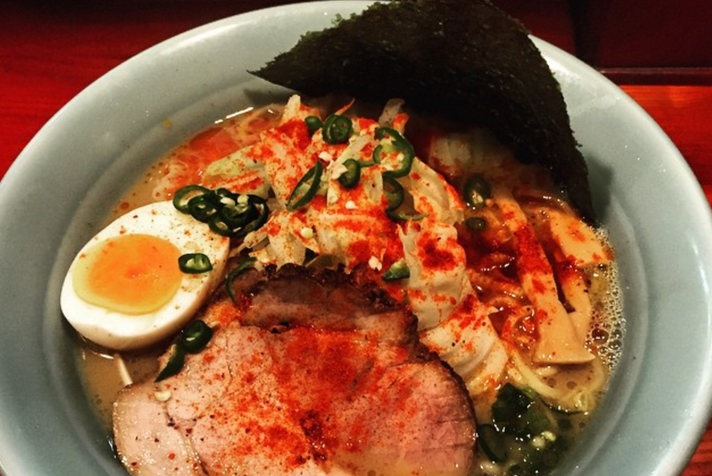
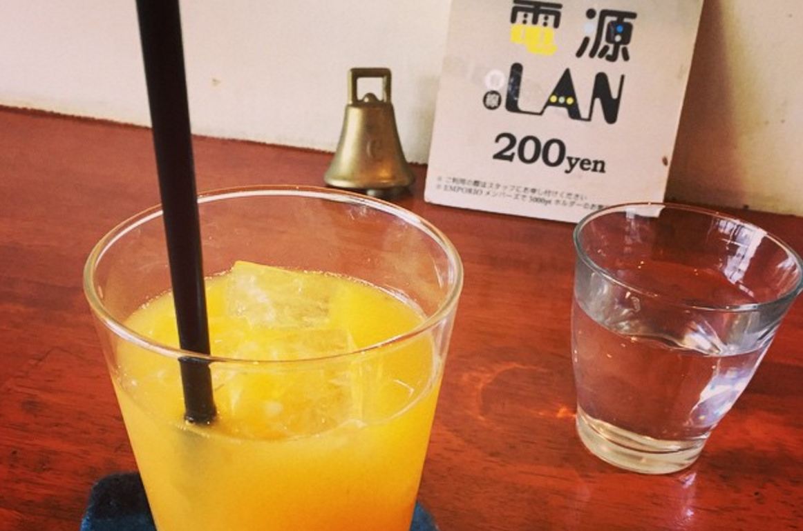
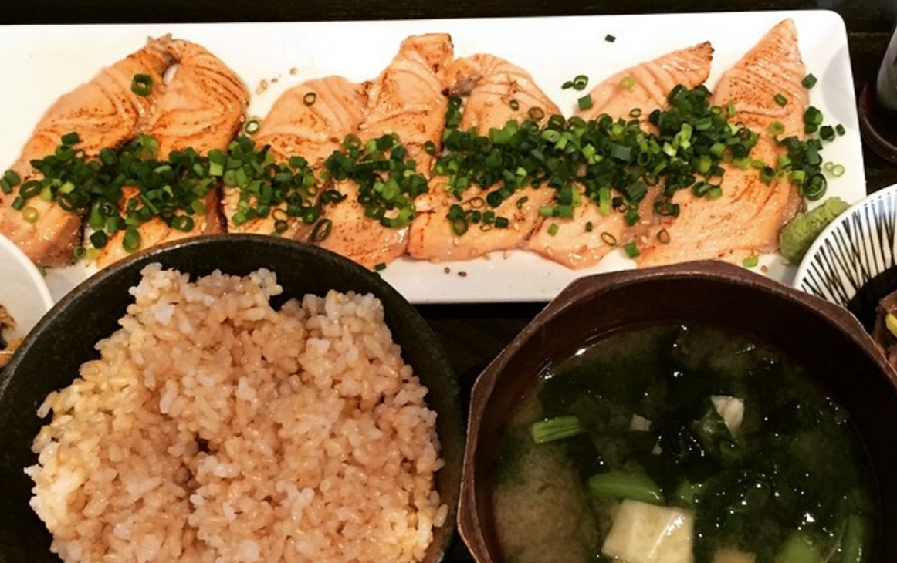
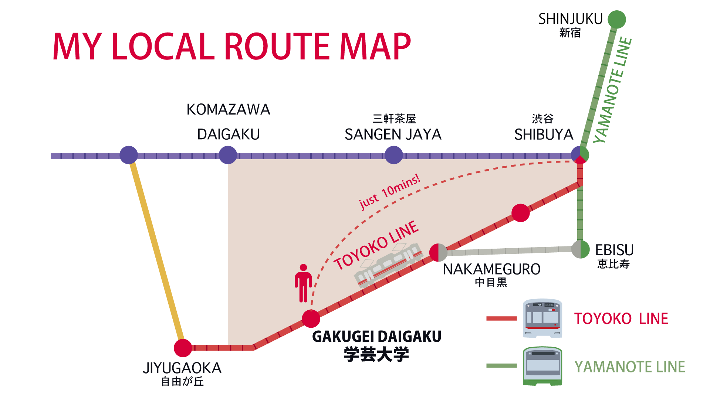
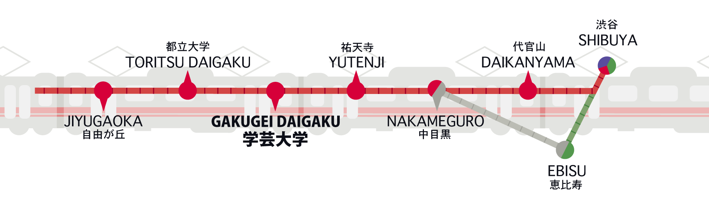
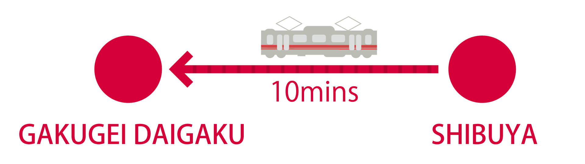

Through a this website, please feel daily life of a man.
- likes basketball/fashion/cafe/food/etc .
- lives in Gakugeidaigaku (10mins from Shibuya).
For visitors to Japan who has similar sensibility to me :)
Hi, my name is Takahiro Fujii(@taka_ft).
I'm working as web application developer in Japan.
My favorite things are basketball, cafe, fashion, food(especially ramen), drink, and so on.
I've been living in Tokyo for 30 years. In this site, I'd like to introduce my hometown with my hobbies especially Gakugeidaigaku.
A lot of people already created site to introduce popular spot, things in Tokyo. This site, I'd like to introduce my personally favorite spot, and share what I do in daily life.
I really like taking a trip to feel daily life. When I take trip, I would like to know what kind of daily life local folks are spending. Especially who has a common interest.
That's why i create this site to introduce my favorite spot. I wish it becomes useful information for visitor to Japan who has similat sensibility to me.

About my hometown, the nearest train station is "Gakugeidaigaku".
Here is about 10minutes from Shibuya by Toyoko-Line.
Only local and express stop Gakugeidaigaku.


Mainly I'm living between Gakugeidaigaku to Shibuya.
text text text text text text text text text text text.
text text text text text text text text text text text.
text text text text text text text text text text text.
text text text text text text text text text text text.
text text text text text text text text text text text.
text text text text text text text text text text text.
text text text text text text text text text text text.
text text text text text text text text text text text.
I have played basketball for 20years. In Japan basketball is one of popular sports, I believe. I'd like to introduce my local street coat and Japanese basketball brand. Especially Japanese basketball brand's quality is really good. But its still not famous for foreigner. So I'd like to introduce them.
I really like to chill out in a cafe. On weekends, I often go to the cafe at the beginning of weekend :). And I'm a web engineer/designer in Japan. So I spend a lot of time in cafe to develop,create something. As you may know, still Japan's free wifi condition is not good. So place which provides free wifi is really worth for me.
Fashion, I definitely would like to explain some of Japanese brand. In Nakameguro and Daikanyama, these are the one of famous fashion town in Tokyo. And also in Gakugeidaigaku, there are some of my favorites shops. So I'd like to introduce them.
In Japan, a lot of style Izakaya is existing. It's not famous, but in Gakugeidaigaku, there is so many cool Izakaya. And the atmosphere is really nice.
The number of ramen restaurant is higher than you imagined. I definitely recommend to eat ramen at the flagship store. I don't recommend to each ramen at ramen street,ramen museum. If you really like ramen.
Walking is the best way to feel local person's daily life. But its difficult to know the best way. Of course you are able to know popular street in Japan. But for feeling daily life, it's not enough. As you know, here is peaceful. So let's go around :)